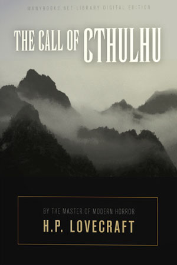
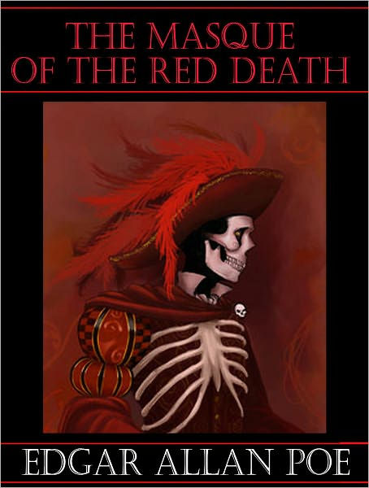
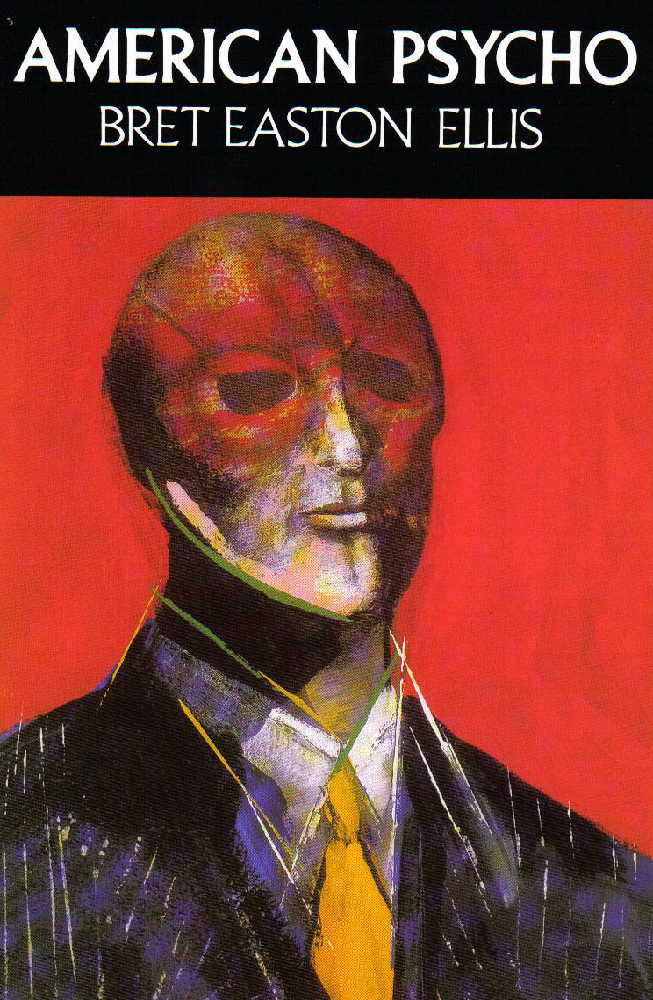

The Call of Cthulhu.
"The Call of Cthulhu" is a short story by the American writer H. P. Lovecraft. Written in the summer of 1926, it was first published in the pulp magazine Weird Tales, in February 1928
Go to Book. -->

The Shining.
The Shining centers on the life of Jack Torrance, an aspiring writer and recovering alcoholic who accepts a position as the off-season caretaker of the historic Overlook Hotel in the Colorado Rockies.
Go to Book. -->

The Masque of the Red Death.
The Masque of the Red Death is a short story by Edgar Allan Poe. The story follows Prince Prospero's attempts to avoid a dangerous plague, known as the Red Death, by hiding in his abbey.
Go to Book. -->

American Psycho.
American Psycho is a novel by Bret Easton Ellis, published in 1991. The story is told in the first person by Patrick Bateman, a serial killer and Manhattan businessman.
Go to Book. -->